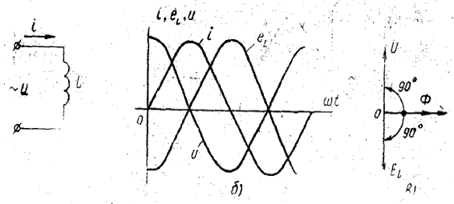
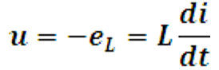

СИНУСОИДАЛ ТОК ЗАНЖИРЛАРИ ВА УЛАРНИ ХИСОБЛАШ
Reja:
1.АКТИВ КАРШИЛИК, ИНДУКТИВ ГАЛТАК ВА СОНДЕНСАТОР УЛАНГАН ЎЗГАРУВЧАН ТОК ЗАНЖИРЛАРИ
2. АКТИВ ВА РЕАКТИВ КАРШИЛИКЛАРИ УЗАРО КЕТМА-КЕТ УЛАНГАН ЗАНЖИР.
3. АКТИВ ВА РЕАКТИВ КАРШИЛИКЛАРИ УЗАРО ПАРАЛЛЕЛ УЛАНГАН ЗАНЖИР.
4. УЗГАРУВЧАН ТОК ЗАНЖИРЛАРИДАГИ ЭНЕРГЕТИК ЖАРАЁНЛАР.
5. УЗГАРУВЧАН ТОК ЗАНЖИРИНИНГ КУВВАТИ ВА КУВВАТ КОЭФФИЦИЕНТИ.
6. КУЧЛАНИШЛАР РЕЗОНАНСИ.
7. ТОКЛАР РЕЗОНАНСИ.
Барча электротехник курилмалар маълум даражада қаршилик R, индуктивлик L ва сиғим С га эга. Булар
ўзгарувчан ток занжирининг параметрлари ҳисобланиб, занжирдаги ўзгарувчан токнинг миқдорига ва бошланғич
фазасига доимо таъсир кўрсатади. Умуман олганда, ўзгарувчан ток занжирининг электр схемаси ана шу
элементлардан турлича комбинацияда ташкил топган бўлади.
Электр манбаидан истеъмол қилинаётган энергия иссиқлик энергиясига айланадиган занжир элементи
актив
элемент, унинг қаршилиги актив қаршилик (R), ундаги қуввати эса актив қувват (Р), дейилади.
Занжирнинг индуктивлик ва сиғим элементларида эса истеъмол қилинаётган электр энергияси даврий
равишда гоҳ магнит, гоҳ электр майдонлари энергиясига айланиб, сўнгра электр энергиясининг манбаига
қайтади.
Манба билан истеъмолчи орасида энергия алмашиниш жараёни содир бўлгани учун мазкур элементлар
реактив элементлар, уларнинг қаршилиги реактив қаршиликлар (индуктив-XL, сиғимий–XC), улардаги қувватлар
эса реактив қувватлар (индуктив-QL,сиғимий - QC) дейилади.
R, L, С параметрларнинг ҳар бири ўзгарувчан ток занжирига якка ҳолда қандай таъсир этишини кўриб
чиқамиз
Бу хилдаги нагрузкага (истеъмолчига) электр энергиясини иссиқлик энергиясига айлантириб берадиган
истеъмолчилар (чўғланма лампалар, барча техника ва маиший электр иситиш асболари, реостат ва бошқалар)
киради.
Шундай қилиб, ифодалардан кўриниб турибдики, актив қаршиликли занжирда кучланиш билан токнинг
ўзгариши синусоидал бўлиб, уларнинг фазалари ўзаро мосдир. Бинобарин, кучланиш билан ток графиклари ва
векторлари орасидаги фаза силжиш бурчаги
Аксарият электротехник қурилмаларнинг асосий қисмини индуктив ғалтаклар (асинхрон двигателлар,
трансформаторлар ва б.) ташкил қилади. Реал индуктив ғалтак ўзининг индуктивлиги L дан ташқари, актив RL
ва сиғим CL қаршиликларга ҳам эга. Аммо занжирдаги физикавий жараёнларни аниқ тасаввур қилиш учун
берилган индуктив ғалтак (идеал индуктив ғалтак) индуктивликдангина иборат, яъни RL=0, СL=0, деб фараз
қилинади.
Агар берилган индуктив ғалтакдан синусоидал ток оқиб ўтаётган бўлcа (13-расм, а), у ҳолда ток ҳосил
қилган ўзгарувчан магнит оқими Ф = Фm sina нинг таъсиридан ғалтакда доимо ўзиндукция ЭЮК
(eL) мавжуд
бўлади. eL ғалтакнинг индуктивлиги ва токнинг ўзгариш тезлигига боғлиқ, яъни
тенгламанинг ўнг томони олдидаги минус ишора Ленц принципига биноан ёзилган

Кирхгофнинг иккинчи қонунига асосан занжирнинг электр мувозанат тенгламаси

Демак, индуктив ғалтакли занжирдаги кучланиш билан ток (графиклари ва векторлари) орасидаги фаза силжиш
бурчаги
Kучланиш токдан фаза бўйича 90° илгари келяпти (13-расм б,в). Бу қуйидагилар билан
тушунтирилади:
1. Ғалтакдаги ўзиндукция ЭЮК (eL) исталган лаҳзада токнинг ўзгариш тезлиги (di/dt )га
пропорционал.
2. Шунинг учун ток ноль қийматлардан ўтаётганда унинг ўзгариш тезлиги энг катта бўлиб, бунда eL
ўзининг амплитуда қийматига эришади, яъни eL=Em.
Бундан занжирдаги токнинг таъсир этувчи қиймати (ёки занжир учун Ом қонуни)ни аниқлаймиз:
Iндуктив ғалтакнинг реактив қаршилиги ёки индуктив қаршилик деб аталиб, XL билан белгиланади.
Ўлчов бирлиги Ом (кОм, МОм):
Демак, ғалтакнинг индуктив қаршилиги унинг индуктивлигига ва ўзгарувчан токнинг частотасига тўғри
пропорционалдир.
Узгармас ток занжирига уланган конденсатордан жуда қисқа вақт ичида (секунднинг улушлари давомида),
яъни
конденсаторнинг зарядланиш жараёни тугаб, сиғим кучланиш ис занжирга ташқаридан берилган кучланиш и га
тенглашгунга қадар ток ўтади.
Бунда занжирнинг электр мувозанати ҳолати Кирхгофнинг иккинчи қонунига биноан қуйидагича
ифодаланади:
Агар q=C∙u эканлигини ва (24) формулани ҳисобга олсак, конденсатор уланган занжирдаги токнинг ўзгаришини
ифодаловчи тенгликни ҳосил қиламиз:
Демак, конденсатор уланган занжирдаги ток кучланишдан фаза бўйича 90° ёки T/4 давр илгари келади
(14-расм, б, в).
Синусоидал кучланиш ноль қийматлардан ўтаётган лаҳзаларда (14-расм, б) диэлектрикнинг қутбланиш
тезлиги ва шу билан занжирдаги силжиш токи ҳам максимал бўлади.
Бундан занжирдаги токнинг таъсир этувчи қиймати (ёки занжир учун Ом қонунининг ифодаси) топилади:
Демак, сиғим қаршилиги токнинг частотаси ва конденсаторнинг сиғимига тескари пропорционалдир.
Элементлари (R, L, С) ўзаро кетма-кет уланган занжирга (15-расм а) берилган кучланиш учта ташкил
этувчидан иборат:
1) актив қаршиликдаги кучланишнинг пасайиши uR=iR;
2) индуктив ғалтакдаги ўзиндукция ЭЮК ни мувозанатловчи кучланиш иL=-eL;
3) конденсаторнинг қопламаларидаги кучланиш ис.
Мазкур занжирнинг электр мувозанат тенгламаси Кирхгофнинг иккинчи қонунига биноан қўйидагича
ифодаланади:
u=uR+uL+uС (28)
Актив ва реактив қаршиликлари ўзаро кетма-кет уланган занжирнинг вектор диаграммаси 15-расм, б ва г
да курсатилган. Ток занжирнинг барча элементлари учун бир хил қийматга эга бўлгани учун у бош вектор
тарзида олинган.
Мазкур векторлар диаграммасидан кўринадики, занжирга берилган кучланишнинг қиймати унинг айрим
қисмларидаги кучланишларнинг геометрик йиғиндисига тенг, яъни
U=UR+UL+UС (30)
Вектор диаграмма қуриш натижасида ҳосил бўлган кучланишлар учбурчаги ОАВ дан эса кучланишларнинг
абсолют
қийматларини аниқлаш мумкин:
бу ерда Z—занжирнинг тўла қаршилиги, Ом, X—занжирнинг реактив қаршилиги, Ом.
Кучланишлар учбурчагининг учала томонини ток I га бўлиб, қаршиликлар учбурчагини ҳосил қиламиз
(15-расм,в, д). Бу учбурчакдан фойдаланиб, қуйидаги нисбатларни ёзиш мумкин:
R, L, С элементлари ўзаро кетма-кет уланган занжирни таҳлил қилиш натижасида қуйидаги хулосага келиш
мумкин:
нинг ишораси занжирдаги реактив ўтказувчанликлардан кайси бирининг катталигига боглиқ. Актив ва реактив
каршиликлари ўзаро параллел уланган занжирнинг вектор диаграммаси 16-расм, б—г да кўрсатилган.
Кучланиш занжирнинг барча элементларида бир хил қийматга эга бўлгани учун кучланиш вектори бош
вектор тарзида олинган. Актив ўтказувчанликдаги ток вектори Ig=gU кучланиш вектори
U билан фазалар
бўйича мос тушади, индуктив ғалтакдаги ток IL кучланиш вектори U дан 90° га кечикади ва
ниҳоят
конденсатордаги ток вектори Ic кучланиш вектори U дан 90° илгарилаб келади. Қарама-қарши
фазада бўлган
токлар (IL ва IC ) нинг векторлари орасидаги бурчак 180° га тенг.
Берилган занжир учун Ом қонунининг ифодаси:
Токлар учбурчагининг учала томонини кучланиш U га бўлиб, ўтказувчанликлар учбурчагини ҳосил қиламиз
(16-расм, в, д). Ўтказувчанликлар учбурчагидан куйидаги нисбатларни ёзиш мумкин:
R, L, С элементлари ўзаро параллел уланган занжирларни таҳлил қилиш натижасида қуйидаги хулосаларга
келиш мумкин:
Биринчи ҳолда занжир актив-индуктив(16 раcм, б), иккинчи ҳолда эса актив-сиғим (16- раcм, г) характерига
эга ҳисобланади. Агар bL=bC бўлса, IL=IC бўлиб, занжирда
токлар резонанси ҳодисаси рўй беради.
Умуман, ўзгарувчан ток занжирининг ихтиёрий вақт лаҳзасидаги қуввати унинг оний қуввати дейилади.
12-расмдаги занжирда оний қувват кучланиш ва ток оний қийматларининг кўпайтмасига тенг:
Оний кувват графигидан (17-расм, а) кўринадики, актив қаршиликли занжирдаги қувват О дан Рт гача
даврий
равишда ўзгаради, бунда унинг ишораси мусбат бўлади. Бу манбадан истеъмол қилинаётган энергиянинг
қаршилик R да бутунлай иссиқлик энергиясига айланиб, занжирда қайтарилмас жараён содир бўлаётганини
кўрсатади.
Одатда, ўзгарувчан ток занжирининг қуввати унинг давр ичидаги ўртача қуввати билан баҳоланади:
Агар U=IR эканлигини ҳисобга олсак,
Демак, ўртача қувват актив қаршиликда иссиқликка айланаётган электр қуввати бўлиб, ўзгарувчан ток
занжирининг актив (ёки фойдали) қуввати дейилади ва Р ҳарфи билан белгиланади. Кувватнинг оний қиймати
токка нисбатан икки марта ортиқ частота билан ўзгаради.
Актив қувват миқдор жиҳатидан электр энергиясининг давр ичида бошқа тур (иссиқлик, механик, кимёвий)
энергияга, яъни фойдали ишга айланиш жадаллигини кўрсатади. Унинг ўлчов бирлиги Вт (кВт, МВт).
Демак, индуктив ғалтак уланган занжирдаги оний қувват токнинг частотасига нисбатан икки марта ортиқ
частота билан синус қонуни бўйича ўзгаради (17-расм, б). Графикдан кўринадики, даврнинг иккинчи ва
тўртинчи чоракларида кучланиш и ва ток i нинг йўналишлари мос, оний қувват ишораси мусбат.
Бу эса манбадан истеъмол қилинаётган электр энергияси индуктив галтакда магнит майдон энергияси
(Wm=Li2/2) тарзида тўпланаётганлигини билдиради (мусбат ярим тўлқин).
Даврнинг биринчи ва учинчи чоракларида кучланиш ва токнинг йўналишлари қарама-қарши, оний қувват
ишораси
манфий. Бунда даврнинг II ва IV чоракларида тўпланган магнит майдон энергияси манбага электр энергияси
тарзида қайтарилади (манфий ярим тўлқин). Бу эса ўзиндукция ЭЮК(eL) нинг О дан Ет
гача ортиши билан
намоён бўлади.
Бу графикдан кўринадики, даврнинг кучланиши ва ток I ларнинг йўналишлари мос бўлган чоракларида оний
қувват ишораси мусбат, мос бўлмаган чоракларида эса манфий бўлади. Бинобарин даврнинг I ва III
чоракларида конденсаторнинг қопламаларидаги кучланиш О дан Тm гача ортади, бунда манбадан
истеъмол
қилинаёгган энергия конденсаторда электр
майдон энергияси Wэ=Си2/2 тарзида тўпланади (мусбат ярим тўлқин). Конденсатор
қопламаларидаги кучланиш
Um дан О гача ўзгараётган II ва IV чоракларда эса аввал тўпланган электр майдон энергияси
эндиликда
манбага электр энергияси тарзида қайтарилади (манфий ярим тўлқин).
Демак, реактив элементли занжирларда электр энергияси манба билан истеъмолчи ўртасида доимо
алмашиниб туради.
Шундай қилиб, даврнинг бир чорагида манбадан энергия истеъмол қилиб, уни даврнинг иккинчи чорагида
манбага қайтариб берадиган нагрузка реактив нагрузка деб аталади. У индуктив ёки сиғим характерига эга
бўлиши мумкин.
Манба билан истеъмолчи ўртасидаги энергия алмашиниш жадаллигини сон жиҳатдан баҳолаш учун реактив
қувват тушунчаси киритилади. Улар QL ва QC ҳарфлари билан белгиланади.
Индуктив кувват QL=UI=I2XL, конденсатордаги реактив қувват эса
QC=UI=I2∙XC бўлиб, L ва С занжирлардаги оний қувватларнинг максимал
қийматларига тенг.
Занжирдаги қувватлар ҳисобланганда индуктив характердаги реактив қувват мусбат, сиғим
характердаги
реактив қувват эса манфий ишора билан олинади.
17-расм, б ва в даги графиклардан қувват ўртача қийматининг (актив қувват) нолга тенглиги
кўриниб
турибди:
SJ системасида актив қувваг ватт,(Вт) ёки киловатт (кВт),реактив қувват вольт-ампер реактив (ВАР) ёки
киловольт-ампер реактив (кВАр), тўла қувват вольт-ампер (ВА) ёки киловольт-ампер (кВт) бирликларда
ўлчанади.
Тула қувват (S=UI )энергетик қурилмалар (электр машиналар, трансформаторлар, узатиш линиялари ва
ҳоказолар)нинг ишлатилиш мобайнида номинал кучланиш Uном ва номинал ток Iном
бўйича бера оладиган энг
катта электр қуввати ҳисобланади.
Ток билан кучланиш орасидаги фаза силжиш бурчаги у қанчалик кичик бўлса, бу миқдор шунчалик катта
бўлади.
Масалан, U=400 В кучланишда Р=6kВт актив кувватни таъминлаш учун тармоқдан истеъмол
қилинадиган, ток ва тўла қувват:

Кучланишлар резонанси ҳодисаcи R, L, С элементлари ўзаро кетма-кет уланган ўзгарувчан ток занжирида
ҳосил бўлиши мумкин (15-раcм, а). Бунда реактив элементлар қаршиликларининг ўзаро тенг
(XL=ХC) бўлиши
резонанс шарти ҳисобланади. У ҳолда бундай,занжирдаги ток:
Занжирнинг резонанс ҳолатига, мос вектор диаграмма ваграфик 19-расм, а ва б да кўрсатилган. Улардан
кўринадики, резонанс пайтида қарама-қарши фазада бўлган реактив (резонанс) кучланишлар UL ва
UC ўзаро
тенг бўлиб, бир-бирларини тўла компенсациялайди. Ҳақиқатан ҳам IXL=IXC, у ҳолда
UL= UC ҳисобланади.
Бундай пайтда U=UR бўлади.
Реактив кучланишлар (UL ва UC) занжирга берилган кучланиш U дан бир мунча
катта бўлиши мумкин.
Кучланишлар резонансининг катталиги реактив элементлар қаршиликларининг актив каршиликдан неча
марта катта бўлишига боғлиқ. Бу қуйидаги ифодалардан ҳам кўриниб турибди:

Демак, кучланишлар резонанси актив қаршилиги унча ката бўлмаган занжирларда яққол билиниб туради.
Кучланишлар резонанси аввалдан ҳисобга олинмаса, резонанс пайтида юзага келган кучланишлар электр
қурилмаларининг изоляцияси ва умуман ишига путур етказади.
Резонанс ҳодисасини манба кучланишининг частотасини, индуктивликни ёки конденсаторнинг сиғимини
ўзгартириш билан юзага келтириш мумкин.
Кучланишлар резонанси ҳодисасидан, радиотехникада кенг фойдаланилгани учун, бундай электр занжири
кетма-кет тебраниш контури дейилади. Чунки иккала реактив қаршилик частотага боғлиқ:
Токлар резонанси ҳодисаси R(g), L, С элементлари ўзаро параллел уланган ўзгарувчан ток занжирида юзага
келади (17-расм,а). Бунинг учун реактив элементларнинг ўтказувчанликлари ўзаро тенг
(bL=bC) бўлиши
керак.
У ҳолда занжирдаги ток Ом қонунига биноан
Занжирнинг резонанс ҳолатига мос вектор диаграмма ва графиклар 20-раcм, а ва б ларда кўрсатилган.
Улардан кўринадики, резонанс пайтида қарама-қарши фазада бўлган реактив (резонанс) токлар IL
ва IC ўзаро
тенг бўлиб, бир-бирларини тўла компенсациялайди. Резонанс шарти (bL=bС) га кўра
U∙bL=U∙bС, демак IL =IC.
Резонанс пайтида реактив токлар IL ва IC занжирдаги умумий ток I дан
(I=Ig+IL+IC) бир қанча катта
бўлиши мумкин. Шунинг учун ҳам бу ҳодиса токлар резонанси деб аталади. Мазкур реактив токларнинг
катталиги реактив элементлар ўтказувчанликлари bL ва bC нинг актив ўтказувчанлик g
дан неча марта
катталигига боғлиқ. Бу қуйидаги нисбатлардан ҳам кўриниб турибди:
Демак, токлар резонанси актив ўгказувчанлиги унча катта бўлмаган занжирларда содир бўлиши мумкин. Токлар
резонанси ҳам кучланишлар резонанси каби учта усул билан юзага келтирилиши мумкин.
Токлар резонансига мосланган контурдаги ток (I=Ig) резонанс частотада бошқа частоталарга
нисбатан
минимал қийматга эришади (20-раcм,в).
Токлар резонансида манбадан келаётган энергия занжирда сарф бўлаётган актив энергиянигина қоплаб,
занжирни улаш лаҳзаси L ва С элементларида эришилган токлар билан резонанс тебранишларни ушлаб туриш
учун хизмат қилади.
Токлар резонансида манбадан келаётган энергия занжирда сарф бўлаётган актив энергиянигина қоплаб,
занжирни улаш лаҳзаси L ва С элементларида эришилган токлар билан резонанс тебранишларни ушлаб туриш
учун хизмат қилади.
Саноатдаги асосий истеъмолчилар актив-индуктив характерга эга бўлгани учун индуктив реактив
қувватни
камайтириб, тармоқнинг қувват коэффициентини ошириш мақсадида истеъмолчига конденсаторлар батареяси
уланади. Конденсаторлар батареясининг реактив сиғим қуввати, қурилманинг реактив индуктив қувватини
кисман компенсациялаб, истеъмолчидан тармоққа қайтариладиган умумий реактив қувватнинг миқдорини ва
таъсирини камайтиришга ёрдам беради, яъни
Q=QL—QC.
Натижада қурилманинг (шунингдек цех ва корхонанинг) қувват коэффициента ошиб, узатиш симларидаги ток ва
линиядаги қувват исрофи ҳамда манба тула қувватининг камайтирилишига имкон бўлади.